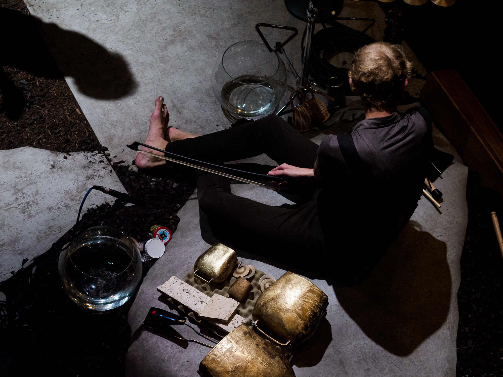
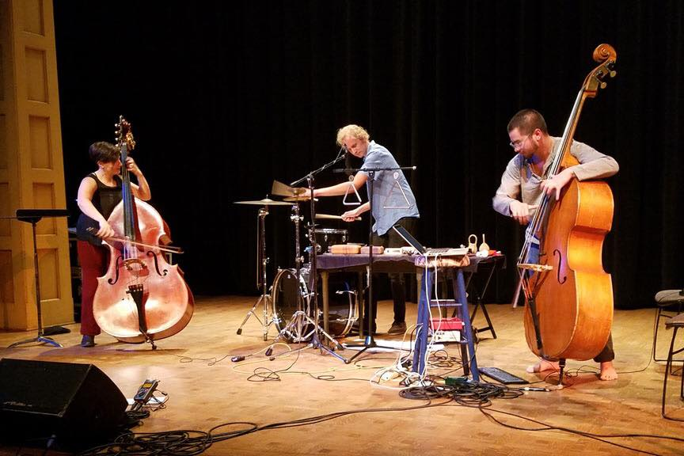
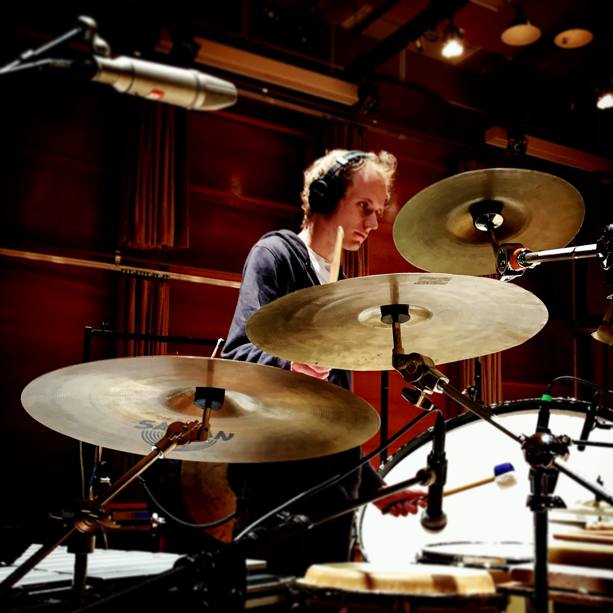

---
# Feel free to add content and custom Front Matter to this file.
# To modify the layout, see https://jekyllrb.com/docs/themes/#overriding-theme-defaults

layout: home
---
<div style="text-align:center;">
  <h3>percussionist, improviser, composer</h3>
</div>
<div class="row">
  <div class="column" style="width: 48%;">
    
    <br><br>
    
    <br><br>
    
  </div>
  <div class="column" style="width: 4%;"><br></div>
  <div class="column"style="width: 48%; text-align:center">
    
    <br>
    <br>
    


  </div>
</div>


<!--
<div style="width: 75%; margin: auto;">

<p style="text-align: right;">
<br>
percussionist, improviser, composer
</p>
</div>
-->
